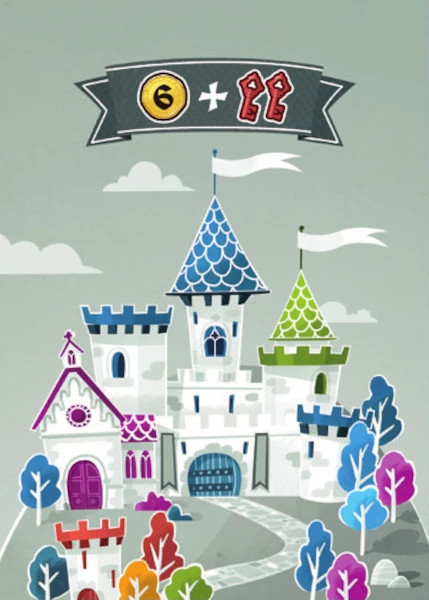
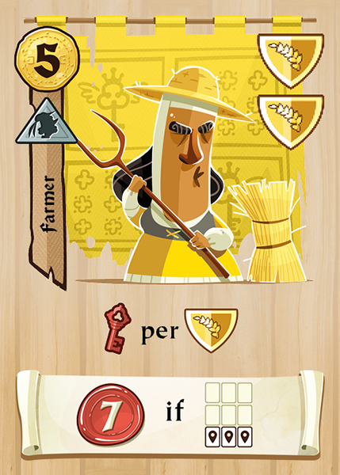
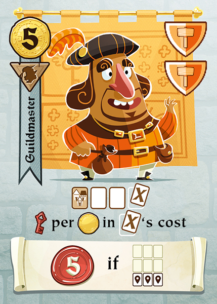

CASTLE COMBO
城堡嘉年华
从城堡与村庄招募角色，拼出你的九宫格。
金币、钥匙与徽章，九张牌也能有大文章。



牌已备好，只差你入座。第一次玩？看一分钟开局提示
- 从信使所在的展示列招募：花费金币拿一张角色牌；钥匙可移信使或刷新。
- 用九张牌拼成阵列：新牌需与已有角色上下左右相邻，阵列最多 3 × 3。
- 留意徽章与组合计分：位置、徽章、折扣和钱袋都可能带来收益。
- 双方放满九张后结算：每张角色按条件计分，剩余钥匙也计分。
SET YOUR TABLE
准备一局
选好对手与先手，入座就开玩。
双方遵循正常信息范围，适合先熟悉规则与操作。
开始新对局会结束当前对局。取消不会改变棋盘。
正在准备对战引擎…
首次使用需下载文件；再次打开可能读取浏览器缓存，但仍需初始化。
完整结束后可保存对局文件；在开始对战下方读取文件，即可回看整场行动。